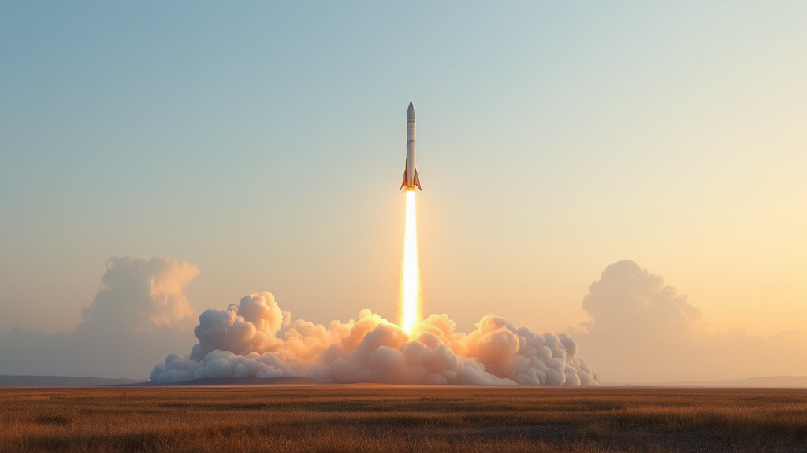
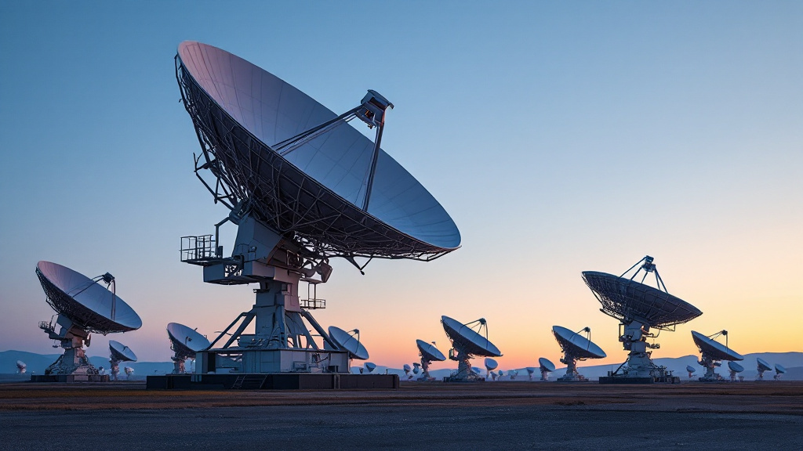
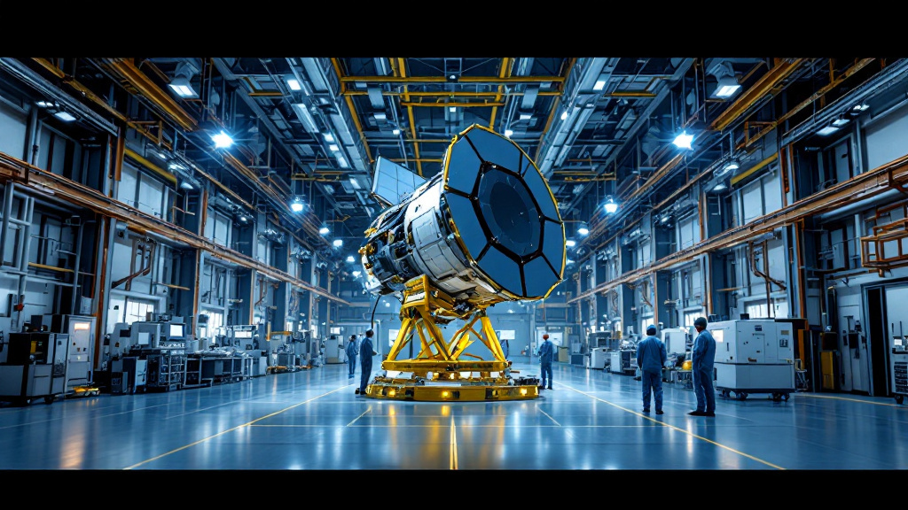

Rocket Lab launching 100th space mission early on Nov. 14: Watch it live #Rockets2026.11.13 Space.com
Astronaut Suni Williams rides through NYC as Grand Marshal of the Veterans Day Parade | Space photo of the day for Nov. 13, 2026 #Mars2026.11.13 Space.com
Solving the space junk crisis isn't just about counting trash—it's about control and economics #Satellites2026.11.13 Phys.org
 Illustrative image Canadian Lunar Rovers Ready for Next Phase—And An Earlier Launch #Moon2026.11.13 Payload
'Don't panic': SpaceX pens familiar message on Starship ahead of historic double-catch test flight #Rockets2026.11.13 Space.com
Watch SpaceX attempt a historic Starship launch and double-catch landing today (Nov. 13) #Rockets2026.11.13 Space.com
 Illustrative image Euclid's First Data Release: A Stepping Stone to its 3D Map of the Sky #Space Science2026.11.12 Universe Today
 Illustrative image Solving the Space Junk Crisis Isn't Just About Counting Trash—It’s About Control and Economics #Satellites2026.11.12 Universe Today
Pakistani astronaut set to become 1st international visitor to China's Tiangong space station this month #Human Spaceflight2026.11.12 Space.com
Satellite snaps rare birds-eye view of the ISS | Space photo of the day for Nov. 12, 2026 #Human Spaceflight2026.11.12 Space.com
Through NASA’s Lens: Capturing Space Shuttle Endeavour’s Move to LA #Human Spaceflight2026.11.12 NASA
SpaceX launches 2nd mystery mission for US Space Force in 6-day span (video, photos) #Human Spaceflight2026.11.12 Space.com
On this day in space! Nov. 11, 1966: NASA launches Gemini 12 mission with astronaut icons Buzz Aldrin and Jim Lovell aboard #Human Spaceflight2026.11.11 Space.com
What time will SpaceX launch Starship Flight 15, its 1st double landing test, today? (Full mission timeline) #Rockets2026.11.11 Space.com
SpaceX moves Starship Flight 15 booster to launch pad for 'squeeze test' ahead of epic double-catch attempt (photos) #Rockets2026.11.10 Space.com
Anthony Mackie, Ariana DeBose, and John Leguizamo reveal why they joined Andy Weir's sci-fi audio drama 'Exoplanet' (interview) #Human Spaceflight2026.11.10 Space.com
Illustrative image Automated Assembly in Space is the Future and NOM4D is Showing the Way #Human Spaceflight2026.11.10 Universe Today
Illustrative image ALMA Reveals a Jet of Cool Gas from a Microquasar #Human Spaceflight2026.11.10 Universe Today
NASA to Welcome Expedition 74 Astronauts Home at Space Center Houston #Human Spaceflight2026.11.10 NASA
Tiny solar whirlpools may hold the secret to the sun's blistering corona #Human Spaceflight2026.11.10 Phys.org